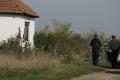
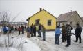
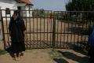

Agyonlõttek egy
cigányasszonyt. Ez minden, amit tényként tudunk.
Nagycsécs és
Tatárszentgyörgy
után Kisléta is rákerült arra az egyre érdekesebb térképre, amelyen a "rasszizmus" áldozatait
jelölik. Eddig egy ilyen eset volt, a többi sokról "sajnos" kiderült, hogy közönséges
maffialeszámolás, öngyújtogatás, biztosítási csalás volt, így le kelett venni arról a bizonyos
térképrõl. Pedig egyesek de izgulnak, hogy vérvörösbe forduljon a sok jelöléstõl, hiszen az karriert
és sok-sok pénzt jelent nekik.
Tehát eddig volt kettõ, most pedig még egy gyilkosság történt.
Hogy mibõl vonták le egyesek a következtetést, hogy a gyilkos rasszista volt, nem tudni. Hiszen
sehol nem rajzolt a falra horogkereszteket, nem üvöltötte, hogy "megdöglötök, mocskos romák", még
csak gárdista-egyenruhát sem viselt, egyszerûen odament, lõtt, majd, mint aki jól végezte dolgát,
távozott. Annyi bizonyos csak, hogy hasonló fegyvert, sörétes puskát használt, mint a nagycsécsi
vagy a tatárszentgyörgyi esetnél.
Ahogy a
Lola
rennt címû film intrójában elhangzik:
"Der Ball ist rund.
Das Spiel dauert 90 Minuten, alles andere ist Theorie!" (Azaz: A labda gömbölyû, a játék
kilencven percig tart, minden más csak elmélet.) Nem sokkal többet mondhat el az átlagember ezekrõl
a gyilkosságokról sem. Kedves Olvasók, törõdjünk bele, hogy semmit nem tudunk. A rendõrök se többet.
Valahol, valaki tudja, de nem fogja elmondani. Így hát tapogatózzunk egy kicsit.
Tételezzük
fel, hogy egy sorozatgyilkos garázdálkodik, noha már ez is csak elmélet. Elkövetési magatartása
mindig ugyanaz. Kis falvakban követ el gyilkosságokat, mégpedig gátlástalanul. Célpontjai mindig
gondosan kiválasztottak: olyan roma személyek, akik semmiben nem felelnek meg a "rasszista"
sztereotípiáknak, tehát rendezett - vagyis hát legalábbis aránylag rendezett - körülmények közt
élnek, nem bûnözõk, és meggyilkolásuk biztosan heves társadalmi reakciót vált ki. Így például
Nagycsécsen egy házaspár, Tatárszentgyörgyön egy ötéves gyermek és édesapja, itt pedig egy asszony
esett áldozatul. Ráadásul ez a gyilkosság éppen a nemrég feltalált "roma holokauszt" napján történt,
mintha csak szándékosan idõzítették volna - s valószínûleg tényleg így is volt.
-
Titkosszolgálatok! - kiált fel a közönség.
- Uzsoramaffia! - kiált fel a közönség másik
fele.
- Rásszisták, gárdisták! - üvölt a túloldal.
És mi van, ha egyik
sem?
Elvontnak és összeesküvéselmélet-szagúnak érzem azt a feltételezést, hogy ezeket a
cselekményeket valamilyen titkosszolgálat hajtja végre. Bár tény, hogy 1998-ban az Aranykéz utcában
is robbantott valaki, bizonyos Vladimir Meciar megbízásából. Ennek ellenére erõltetettnek érzem azt
a feltételezést, hogy akár egy magyar, akár egy külföldi titkosszolgálat követné el ezeket a
bûncselekményeket, abban a reményben, hogy sikerül Magyarország renoméját lerombolniuk az EU és más
szervezetek elõtt. A feltételezett érdekelteknek ugyanis semmi érdekük nem fûzõdik ehhez. Nekik
tudniillik nincs szükségük valódi gyilkosságokra. Mi több, éppen hogy ártana nekik! Hiszen bár
könnyen elérnék céljukat, de a gyilkosságoktól felpiszkált cigányok és a jogosan védekezõ magyarok
közt kialakult polgárháborús helyzeten nehezen tudnának úrrá lenni. Nekik pedig stabil térségre van
szükségük, hogy befektetéseiket biztonságban tudják, nem pedig olyan országra, ahol bármikor
kitörhetnek a néhány évvel ezelõtti, szlovákiaihoz hasonló események. Egy titkosszolgálat pontosan
fel tudja mérni, mivel jár egy ilyen akció. A magyarok kiirtása nagyszerûen megy a maga útján az
"egészségügyi reformok", az élelmiszerek mérgezése és a népbutítás módszerével is, nem kell ide még
sörétes puska is.
A további találgatáshoz rajzoljuk fel a gyilkos profilját. Amúgy amatõr
módon.
Az elkövetõ minden esetben úgy közelítette meg a helyszínt, és úgy is távozott, hogy
senki sem látta. A közhiedelemmel ellentétben a fekete terepjárót is csak egyszer látták, azt is
csak egy tanú állítja. Sokkal valószínûbb, hogy a gyilkos gyalog közlekedik, és jármûvét a
helyszíntõl távol rejti el. Ez biztosan nem egy látványos, fekete terepjáró. Ennek meséjét Kolompár
Orbán találta ki, és õ mesélte tovább a sajtónak, például az Indexnek:
"A roma vezetõ az Index kérdésére elmondta, hogy véleménye szerint a
tatárszentgyörgyi eset számos körülményben hasonlít a nagycsécsi lövöldözésre. Itt is egy
cigánysoron álló, a falutól távol esõ házat ért támadás. A környéken nincs megfelelõ közvilágítás,
és a tanúk szerint a bûntényt megelõzõ napon itt is megjelent egy fekete, ismeretlenek által
vezetett dzsip a településen. "
A gyilkos a támadások során nagyon magabiztosan
viselkedik. Pontosan tudja, milyen messzirõl lõhet, mennyire merészkedhet közel az áldozatokhoz és
az épületekhez. Nagycsécsen például, miután a házat Molotov-koktéllal felgyújtotta, közvetlen
közelrõl lõtt be az ablakon. Nem csekély hidegvér és elszántság kellett ehhez, hiszen miután a ház
lángba borult, nem lehetett biztos benne, hányan szaladnak össze hirtelen, ki fog kijönni a házból,
és nem csúszik-e el egy "banánhéjon", amire nem számított. Akárki is a gyilkos, nem idegen számára
az ölés, és valószínûleg a fegyverével is "jó barátságban" van, alaposan begyakorolta a használatát.
Amikor akcióba megy, számára mindegy, ki kerül elé, gondolkodás nélkül lõ.
A gyilkos a
terepen mozgás, az álcázás és a rejtõzés mûvészetében is gyakorlott. Hiszen biztos, hogy megfigyelte
a helyszíneket. Nagykállón tudta, melyik ablakhoz kell odamennie, Tatárszentgyörgyön tudta, hol
fognak kiszaladni az udvarra, Kislétán pedig berúgta az ajtót, és odabent, a házban lõtt az
áldozatokra. Ismeretlen házban, sötétben, kiszámíthatatlan körülmények között - ez ismét komoly
hidegvért feltételez. Hiszen az áldozat rátámadhat páni félelemben, hozzávághat valamit, vagy
nekiütközhet valaminek a sötétben, amitõl megsérül. Különösen, mivel a cigányputrik nem a
rendezettségükrõl nevezetesek.
Mindhárom helyszín hasonló volt. Kis település szélén álló
ház, amely körül nyílt terep húzódik. Ez is profira vall: kerüli az átszegdelt terepet, ahol
tereptárgyak takarják a kilátást és akadályozzák a lövést. A házak kiválasztásakor szempont volt a
számára, hogy könnyen tudja megközelíteni, majd a lövések után távozni, és az esetleges szemtanúk
csak messzirõl lássák, vagy ne legyen fedezékük, ha rájuk lõ. Nézzük csak!
  A nagycsécsi, a
tatárszentgyörgyi és a kislétai gyilkosság helyszínei: mind nyílt mezõ mellett voltakA nyílt terep feltételez még egy
elõnyt a támadó számára: ha valami miatt félresiklik a terv, vagy gyorsan tud menekülni, a sötétben
lehagyva üldözõit (ha vannak), vagy pedig õ maga tudja könnyen utolérni a tõle menekülõ esetleges
tanút. A nyílt terepen könnyen le is rázhatja az esetleges üldözõket. Emberünk tehát gyakorlott
terepfutó, minden bizonnyal egy edzett ember.
A sötétben, sík terepen való gyors menekülés és
a koromsötét házba való gondolkodás nélküli behatolás feltételez még egy dolgot: hogy emberünk
éjjellátó készüléket használ. S ha már ilyen taktikus gondolkodása van, minden bizonnyal fekete
álcaruhát (gyakorlót) és arcfestést vagy maszkot is visel. Bizonyára a gyilkosság helyszíne
közelében elrejtett jármûve szolgál bázisként, ahol átöltözik, majd vissza.
Tehát eddig van
egy kisportolt ürgénk, aki vadászpuskával és éjjellátóval rendelkezik, nem okoz neki gondot a
gyilkolás, maximálisan bízik a fegyverében és a harci képességeiben, és jó
álcázó-megfigyelõkészséggel is rendelkezik.
Kommandós? Nem. A gyilkos egy vadász. Erre utal a
fegyvere, a felszerelése, a felhasznált rutinja, a megfigyelés, a becserkészés. Tudatosan alkalmazza
a vadászat fortélyait a cigányokra. Nincs fegyverkereskedõ kapcsolata, mert akkor nem
Molotov-koktéllal szórakozna, nem cipelne tízliteres benzineskannákat a helyszínre, mint ahogy
Tatárszentgyörgyön történt, hanem kézigránátot vagy robbanóanyagot szerezne.
S most nézzük,
hogyan választja ki az áldozatait. Az áldozatok mindig cigányok, de nem érdekli, mifélék. A
kiválasztásnál egyetlen szempont számít neki, az áldozat becserkészhetõsége, a helyszín
megközelíthetõsége. Számára fontosabb, hogy épségben és a lebukás veszélye nélkül hagyhassa el a
helyszínt, mint az, hogy kit fog megölni. Ez is vadászra utal. A gyilkos vadászik a cigányokra, mint
a vadállatokra. Nem bûnözõkön próbál bosszút állni, nem elõre eldöntött célpontot próbál leküzdeni,
mint egy katona. A cigánytelepet hasonlóan kezeli, mint egy csorda állatot, akiket titokban cserkész
be, és a legkönnyebb prédát célozza meg közülük.
Ha azonban emberünk vadász, az feltételezi,
hogy trófeát is gyûjt. Különben minek a vadászat? Nos, nem kell, hogy a helyszínrõl vigyen el
valamit. "Vadászata" eredményével tele a sajtó, büszkén ragasztgathatja otthon a kivágott
újságcikkeket a falra, mint valami klisés hollywoodi thrillerben. Csakhogy minden bizonnyal valóban
ezt teszi. Ha ugyanis vadászatként tekint a cigányok meggyilkolására, akkor büszke akar lenni az
eredményre, látni akarja azt saját kis kuckójában, ahová kuncogva meghúzódik a felbolydult hatóságok
elõl, készülve a következõre.
Na jó, de mi visz arra egy vadászt, hogy cigányokra kezdjen
vadászni?
Az uzsoramaffia megbízása? Állítólag az áldozatok egyikének sem volt
uzsoratartozása. Fogadjuk el. Der Ball ist rund.
Titkosszolgálati utasítás? Azok sokkal
"katonásabb" vagy "terroristásabb" elkövetést választanának. Például robbantást, mint az Aranykéz
utcában. Egy felrobbanó cigányputri is ugyanannyira hatékony lenne a vélt cél érdekében, de nem
veszélyeztetné annyira az ügynököt - és magát az akciót sem - mint egy fegyveres rajtaütés, ami
könnyen közelharchoz, "munkahelyi balesethez" vezethet.
Nem, egyiket sem tartom valószínûnek.
Sokkal hihetõbb, hogy egy megkattant vadászról van szó, aki elhatározta, hogy elég volt a
szarvasokból, ideje romát lõni. Ezt akár legális fegyverével is megteheti, hiszen a sörétekrõl nem
lehet megállapítani, melyik fegyverbõl származnak. Semmi olyan felszerelésre nincs szüksége, amivel
ne rendelkezne eleve, és ami szemet szúrna bárkinek is.
Vadászunk kétségkívül rasszista.
Igaza lehet Kolompár Orbánnak, amikor feltételezi, hogy rasszista volt az elkövetõ. Igaz, õ ezt csak
reflexbõl vágta rá, mivel az áldozatok cigányok, de kivételesen ráhibázott. De mi indít egy vadászt
ilyen különös tettekre?
Emberünk nem dühbõl, hanem kiszámítva, hidegvérrel cselekszik.
Lehetséges, hogy valamilyen bûncselekményért áll bosszút, ami õt vagy a szeretteit érte. Amennyi
borzalmas cigánybûncselekmény történt az elmúlt években, egyáltalán nem csoda. Talán annak a
bácsinak a fia, unokája, akit a tetvesek a saját disznóival falattak fel? A megerõszakolt és
feldarabolt nénié? Pénzes Henrietta, Szögi Lajos vagy Králik Attila rokona? Vagy nem is rokon, csak
egy magányos "igazságosztó", aki igazság helyett gazságot oszt? De az is lehet, hogy semmilyen
bosszút nem áll, egyszerûen élvezi, amit mûvel, a vadászatot, a hatóságok tehetetlen szaladgálását,
a hisztériázó kolompárorbánok látványát.
Egy biztos. Svábokat, örményeket, románokat,
szerbeket, szlovákokat, ukránokat, szlovéneket, ruszinokat, lengyeleket, görögöket, bolgárokat vagy
horvátokat senki nem lövöldöz Magyarországon hobbiból. Miért pont erre a kisebbségre esett a
sorozatgyilkos választása? Talán tizenkét oldalú kockán dobta ki? Magánvéleményem, hogy a
nagycsécsi, tatárszentgyörgyi és kislétai áldozatok nem egyszerûen egy gyilkos lelkén száradnak. Õk
együvé tartoznak a cigánybûnözés minden áldozatával. Az elmebeteg "vadász" ugyanazért választotta a
cigányokat, mint elejtendõ vadakat, amiért titkon elég sokan szeretnénk ezt tenni. Itt, a
Bombagyáron nem is olyan titkon. Pedig nem azon a tisztességes néhány százalékon kellene elverni a
port. Vadász úr, szívesen adok önnek egy listát. Aladárral kezdõdik, és Zámoly a
vége.